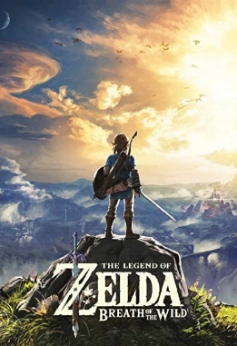
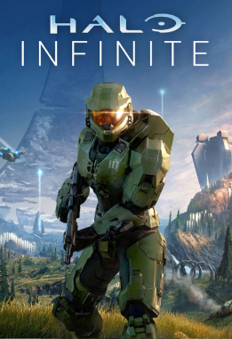
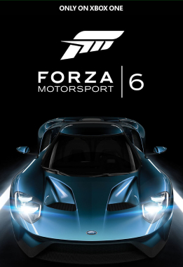

The Legend of Zelda: Breath of the Wild

The Legend of Zelda: Breath of the Wild es el décimo noveno título de la saga homónima
lanzado para las consolas Wii U y Nintendo Switch.
Fue publicado el 3 de marzo de 2017, a la par del lanzamiento de la consola Nintendo Switch.
Se han replanteado diferentes convenciones de la saga volviendo así a los orígenes de la misma, permitiendo,
por ejemplo, que el jugador sea capaz de elegir a dónde ir
y cómo llegar hasta allí en cualquier momento del juego,
pero solamente después de adquirir la paravela,
ya que sin ella, no se podrá salir de la Meseta de los albores.
Assassin's Creed: Valhalla

Assassin's Creed: Valhalla es la duodécima entrega principal en la franquicia Assassin's Creed de Ubisoft.
Fue confirmado durante una transmisión en Twitch el 29 de abril de 2020
En el juego, el jugador toma el control de Eivor,, un vikingo que participó en redadas en Inglaterra.
El juego conserva la elección de diálogo y los elementos de relación de NPC de Assassin's Creed: Odyssey,
con nuevos elementos como forjar alianzas políticas con clanes de NPC.
Cada elección y decisión de los jugadores afecta el mundo del juego en tiempo real.
Los jugadores pueden viajar desde las frías costas de Noruega a Inglaterra.
Halo Infinite

Halo Infinite es un videojuego de disparos en primera persona,
siendo la secuela de Halo 5: Guardians y Halo Wars 2.
Así como un reinicio espiritual de la saga. Fue revelado en la E3 de 2018,
y originalmente sería lanzado al mercado junto con la Xbox Series X a finales de 2020
estando disponible también para Xbox One y Windows 10.
Sin embargo, en Agosto de 2020 343 Industries
anunció que el juego sería retrasado,
siendo el 8 de Diciembre de 2021 la fecha de lanzamiento.
Forza Motorsport 6:

Forza Motorsport 6 es un videojuego de carreras desarrollado por Turn 10 Studios
y distribuido por Microsoft Studios para Xbox One y para Windows 10
Fue revelado durante el Salón del Automóvil Internacional de Norteamérica
en Detroit, Michigan el 12 de enero de 2015.
Ford y Microsoft han llegado a un exclusivo acuerdo que conseguirá que el Ford GT sea la portada del juego,
uno de los coches nuevos que incluye el juego, que es la nueva versión del
Ford F-150 Raptor y del Ford Mustang GT350.
De acuerdo con Henry Ford III,
los videojuegos conseguirán "una nueva forma de clientela y de llegar a los consumidores".